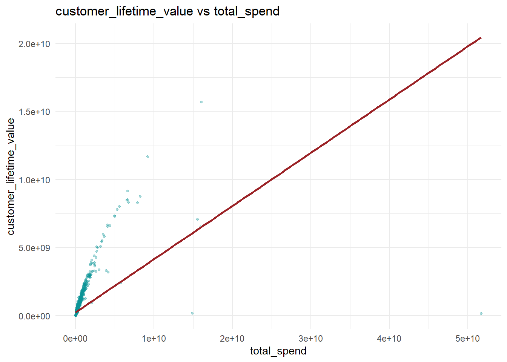
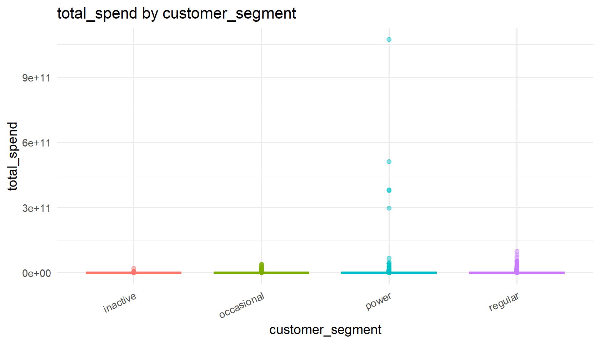

required_packages <- c("tidyverse", "lubridate", "broom")
to_install <- required_packages[
!vapply(required_packages, requireNamespace, logical(1), quietly = TRUE)
]
if (length(to_install) > 0) install.packages(to_install)
invisible(lapply(required_packages, library, character.only = TRUE))Take-home Exercise 2: Confirmatory Data Analysis Prototype
1 Overview
This prototype demonstrates one confirmatory module using raw data preparation and two hypothesis tests:
- H1: Regression test (behavior predictor -> business outcome)
- H2: Group difference test (numeric value across categories)
2 1. Installing and Loading Required Packages
3 2. Loading Raw Data
customer_raw <- read_csv("data/customer_data.csv", show_col_types = FALSE)
tx_raw <- read_csv("data/transactions_data.csv", show_col_types = FALSE)4 3. Data Preparation
4.1 3.1 Clean transactions and engineer behavior features
tx_clean <- tx_raw %>%
mutate(
date = as.Date(date),
amount = as.numeric(amount),
type = as.character(type),
is_weekend = wday(date, week_start = 1) >= 6
) %>%
filter(!is.na(customer_id), !is.na(date), !is.na(amount), amount > 0)
snapshot_date <- max(tx_clean$date, na.rm = TRUE)
tx_features <- tx_clean %>%
group_by(customer_id) %>%
summarise(
tx_count = n(),
total_spend = sum(amount, na.rm = TRUE),
avg_spend = mean(amount, na.rm = TRUE),
spend_std = sd(amount, na.rm = TRUE),
first_tx_date = min(date, na.rm = TRUE),
last_tx_date = max(date, na.rm = TRUE),
active_days = n_distinct(date),
recency_days = as.integer(snapshot_date - last_tx_date),
tenure_days_tx = as.integer(last_tx_date - first_tx_date) + 1,
tx_per_active_day = tx_count / pmax(active_days, 1),
weekend_ratio = mean(is_weekend, na.rm = TRUE),
.groups = "drop"
)4.3 3.3 Join with customer profile and outcomes
customer_keep <- customer_raw %>%
transmute(
customer_id = as.numeric(customer_id),
age,
gender,
income_bracket,
customer_segment,
satisfaction_score = as.numeric(satisfaction_score),
nps_score = as.numeric(nps_score),
churn_probability = as.numeric(churn_probability),
customer_lifetime_value = as.numeric(customer_lifetime_value)
)
conf_df <- customer_keep %>%
inner_join(tx_prep, by = "customer_id")
dim(conf_df)[1] 48723 245 4. Variable Setup
ALPHA <- 0.05
exclude_cols <- c("customer_id", "first_tx_date", "last_tx_date")
analysis_cols <- setdiff(names(conf_df), exclude_cols)
numeric_cols <- analysis_cols[vapply(conf_df[analysis_cols], is.numeric, logical(1))]
categorical_cols <- analysis_cols[!vapply(conf_df[analysis_cols], is.numeric, logical(1))]
pick_col <- function(preferred, pool) {
hit <- preferred[preferred %in% pool]
if (length(hit) > 0) hit[1] else pool[1]
}
fmt_num <- function(x, digits = 3) {
ifelse(is.na(x), "N/A", formatC(x, digits = digits, format = "f"))
}6 5. H1: Regression (Behavior -> Outcome)
Hypotheses: - H0: Slope of predictor is zero when predicting outcome. - H1: Slope of predictor is not zero.
Justification: Linear regression is suitable because both variables are numeric and the objective is to estimate direction, magnitude, and significance of association.
6.1 5.1 H1 function and run
run_h1_regression <- function(data, outcome_var, predictor_var, alpha = 0.05) {
dff <- data %>%
transmute(
outcome = as.numeric(.data[[outcome_var]]),
predictor = as.numeric(.data[[predictor_var]])
) %>%
drop_na()
stopifnot(nrow(dff) >= 10, length(unique(dff$predictor)) >= 2)
fit <- lm(outcome ~ predictor, data = dff)
fit_tidy <- broom::tidy(fit)
fit_glance <- broom::glance(fit)
slope <- fit_tidy %>% filter(term == "predictor") %>% pull(estimate)
p_value <- fit_tidy %>% filter(term == "predictor") %>% pull(p.value)
r_squared <- fit_glance$r.squared
decision <- ifelse(p_value < alpha, "Reject H0", "Fail to reject H0")
list(
data = dff,
model = fit,
slope = slope,
p_value = p_value,
r_squared = r_squared,
decision = decision
)
}
h1_outcome <- pick_col(c("customer_lifetime_value", "churn_probability", "total_spend"), numeric_cols)
h1_predictor <- pick_col(c("total_spend", "tx_count", "recency_days", "avg_spend"), setdiff(numeric_cols, h1_outcome))
h1_res <- run_h1_regression(conf_df, h1_outcome, h1_predictor, alpha = ALPHA)
tibble(
Metric = c("Outcome", "Predictor", "Slope", "p-value", "R-squared", "Decision"),
Value = c(
h1_outcome, h1_predictor,
fmt_num(h1_res$slope, 4),
fmt_num(h1_res$p_value, 4),
fmt_num(h1_res$r_squared, 3),
h1_res$decision
)
)# A tibble: 6 × 2
Metric Value
<chr> <chr>
1 Outcome customer_lifetime_value
2 Predictor total_spend
3 Slope 0.0137
4 p-value 0.0000
5 R-squared 0.012
6 Decision Reject H0 6.2 5.2 H1 plot (compressed for report size)
set.seed(608)
plot_n <- min(5000, nrow(h1_res$data))
plot_df <- dplyr::slice_sample(h1_res$data, n = plot_n)
ggplot(plot_df, aes(x = predictor, y = outcome)) +
geom_point(alpha = 0.35, color = "#0A9396", size = 0.9) +
geom_smooth(method = "lm", se = FALSE, color = "#9B2226", linewidth = 1) +
theme_minimal(base_size = 11) +
labs(
title = paste(h1_outcome, "vs", h1_predictor),
x = h1_predictor,
y = h1_outcome
)
Interpretation note: If p-value < 0.05, there is evidence that the selected behavior predictor is associated with the selected outcome.
7 6. H2: Group Difference (Value Across Groups)
Hypotheses:
H0: Mean value is equal across groups.
H1: At least one group differs.
Justification: Use ANOVA when assumptions hold; otherwise use Kruskal-Wallis for robust non-parametric comparison.
7.1 6.1 H2 function and run
run_h2_group_difference <- function(data, group_var, value_var, alpha = 0.05, min_group_n = 3) {
dff <- data %>%
transmute(
group = as.character(.data[[group_var]]),
value = as.numeric(.data[[value_var]])
) %>%
drop_na()
counts <- table(dff$group)
keep <- names(counts[counts >= min_group_n])
dff <- dff %>% filter(group %in% keep)
split_vals <- split(dff$value, dff$group)
stopifnot(length(split_vals) >= 2)
normality_pass <- TRUE
if (min(lengths(split_vals)) < 20) {
set.seed(42)
for (vals in split_vals) {
sample_vals <- if (length(vals) > 500) sample(vals, 500) else vals
if (length(unique(sample_vals)) < 3 || shapiro.test(sample_vals)$p.value < alpha) {
normality_pass <- FALSE
break
}
}
}
var_p <- bartlett.test(value ~ group, data = dff)$p.value
variance_pass <- var_p >= alpha
if (normality_pass && variance_pass) {
test_name <- "One-way ANOVA"
fit <- aov(value ~ group, data = dff)
stat <- summary(fit)[[1]]["group", "F value"]
p_value <- summary(fit)[[1]]["group", "Pr(>F)"]
} else {
test_name <- "Kruskal-Wallis"
kw <- kruskal.test(value ~ group, data = dff)
stat <- as.numeric(kw$statistic)
p_value <- kw$p.value
}
decision <- ifelse(p_value < alpha, "Reject H0", "Fail to reject H0")
p <- ggplot(dff, aes(x = group, y = value, color = group)) +
geom_boxplot(outlier.alpha = 0.45, show.legend = FALSE) +
theme_minimal(base_size = 11) +
theme(axis.text.x = element_text(angle = 25, hjust = 1)) +
labs(
title = paste(value_var, "by", group_var),
x = group_var,
y = value_var
)
list(
data = dff,
test_name = test_name,
statistic = stat,
p_value = p_value,
decision = decision,
plot = p
)
}
h2_group <- pick_col(c("customer_segment", "income_bracket", "gender"), categorical_cols)
h2_value <- pick_col(c("total_spend", "customer_lifetime_value", "tx_count"), numeric_cols)
h2_res <- run_h2_group_difference(conf_df, h2_group, h2_value, alpha = ALPHA)
tibble(
Metric = c("Group variable", "Value variable", "Test used", "Statistic", "p-value", "Decision"),
Value = c(
h2_group, h2_value,
h2_res$test_name,
fmt_num(h2_res$statistic, 3),
fmt_num(h2_res$p_value, 4),
h2_res$decision
)
)# A tibble: 6 × 2
Metric Value
<chr> <chr>
1 Group variable customer_segment
2 Value variable total_spend
3 Test used Kruskal-Wallis
4 Statistic 27331.531
5 p-value 0.0000
6 Decision Reject H0 7.2 6.2 H2 plot
h2_res$plot
Interpretation note: If p-value < 0.05, at least one group differs in the selected metric.